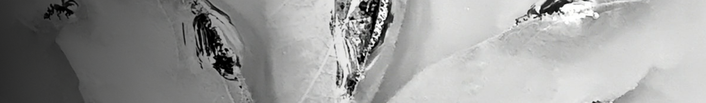

”hershel” è il mio nuovo progetto ambient, che questo Giugno 2026 ha debuttato con la release del mio album “silent steps for a better way” rilasciato tramite Whitelabrecs.
Con una sonorità ispirata ad artisti come Stars Of The Lid, Tim Hecker, Bing & Ruth, Kyle Bobby Dunn, e molti altri, questo progetto è in costante crescita ed il secondo album è già in lavorazione.